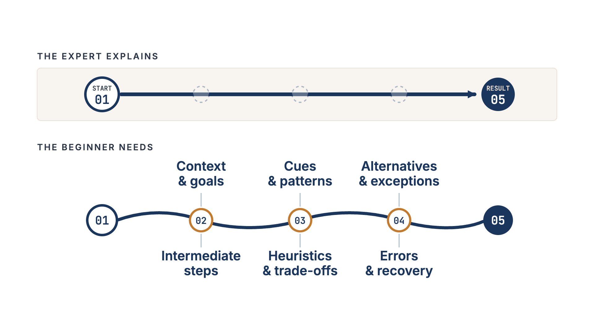
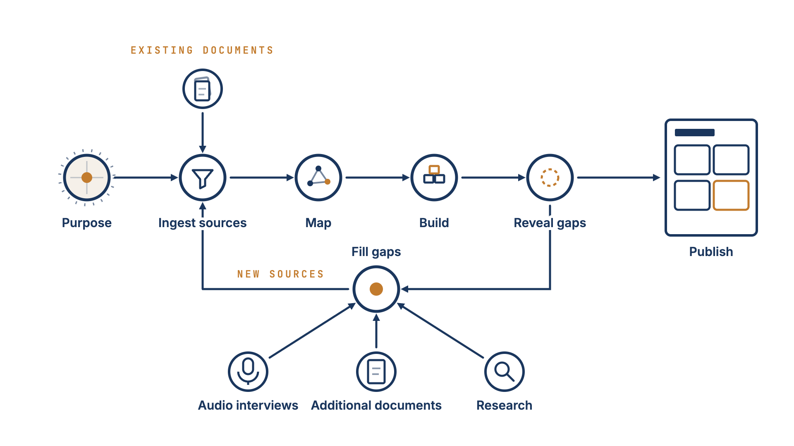

Building Purpose-Driven Knowledge Bases with Expert Interviews
Organising documents is not enough when the knowledge you need was never written down. Why every knowledge base starts with a purpose and interviews fill the gaps.

Originally published on LinkedIn.

A classic offering in knowledge management is a platform that helps companies organise their documents and make them more accessible. And that is important, because it is a shame if someone has put in the effort to write down key knowledge and others cannot use it because they cannot find it.
However, at Knowledge Retention Solutions, we realised that for many companies, managing structure and accessibility is not enough. Research suggests that roughly 60% of the knowledge people need to do their jobs is based on experience, much of which remains undocumented. If that is true for you, better search does not solve the problem.
Why writing it down rarely works
Once we realised that the information we needed resided in people's heads and had not yet been documented, we needed a solution that could help put it into writing. The straightforward solution is to ask people to write things down. For two reasons, this often produces disappointing results.
The first is the curse of knowledge and the blind spots that come with expertise. Experts often find it difficult to put themselves in the shoes of a beginner. They assume things to be obvious that are far from obvious to someone outside their field.
The second is that not everyone is a writer, and not everyone has the time to write. Writing is a skill that requires practice. Without that practice, it can be painfully slow, which makes it even more difficult to integrate into a busy schedule.
The result of these two limitations is documentation that lacks both breadth and depth.
Interviews as a first-class input
Our solution is to make audio interviews a first-class input to the knowledge base: we use interview methods grounded in cognitive psychology and developed specifically to elicit expert knowledge, while audio removes the need for the expert to write everything down.

When designing the interview process, however, we realised that we could not simply leave documents and transcripts as they were. To prepare excellent interview questions, we first had to refactor the existing documents around the purpose of the knowledge base.
This is now the starting point for our knowledge-retention projects: Who should use the knowledge base to do what? What is its purpose?
Once you have defined that purpose, you can select the documents that are relevant to it and identify the gaps you need to close to fulfil it.
With that, we had the core process in place.
The core process
You start with a purpose. You map out the knowledge domain based on the documents and the scoping discussions you have had. This mapping reveals the gaps in the knowledge base, which you then fill systematically through interviews, additional documents, and research. You iterate through that cycle until you are satisfied with the result.

What the knowledge base looks like
One consequence of this approach is that the knowledge base takes the shape of something like a wiki. Statements from the source documents are decomposed and organised into self-contained articles, which are nested within cohesive domains.
A knowledge base for sales enablement might contain articles on objection handling and pitches for different decision-makers within the sales domain. A knowledge base for engineering knowledge retention might contain articles on design limits and pitfalls or temperature effects within the design-theory domain.
You can use the knowledge base in the same way you use Wikipedia to read up on specific topics. You can also transform sections of it into tailored artefacts, such as sales playbooks or learning paths for onboarding new hires in engineering. And you can couple the knowledge base with a chatbot when you need instant answers grounded in your documents and your experts' knowledge. It can also provide the knowledge layer for AI systems that support or automate knowledge-intensive processes.
This is how our approach differs from many knowledge-management solutions. We build purpose-driven knowledge bases around a defined use case, identify what is missing, and fill the gaps through expert interviews and targeted research.
The purpose determines the knowledge base. Existing documents provide its starting point. Experts fill in the whys, the judgement calls, and the exceptions.